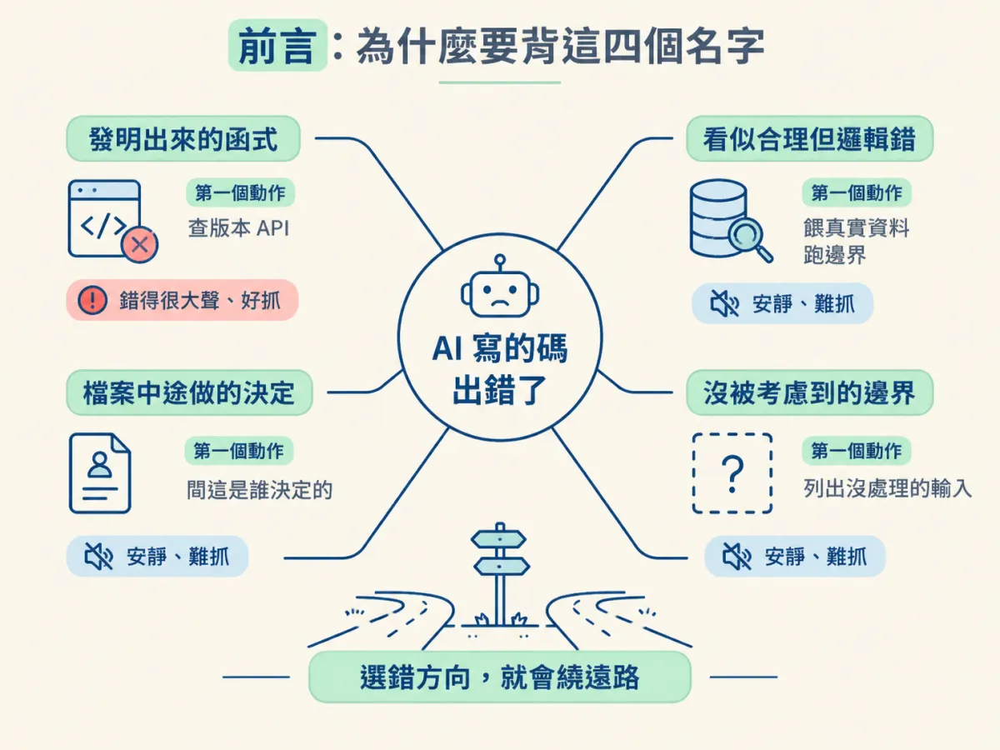
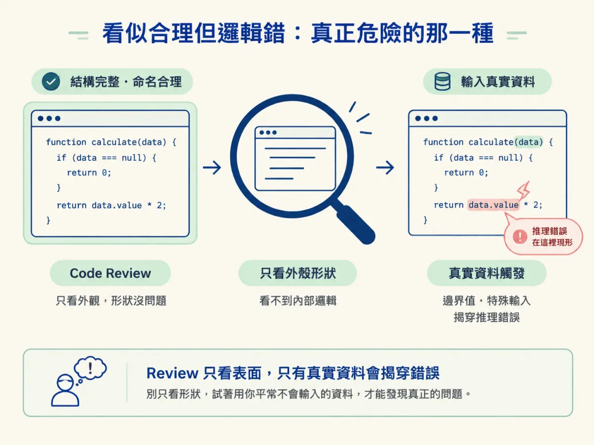
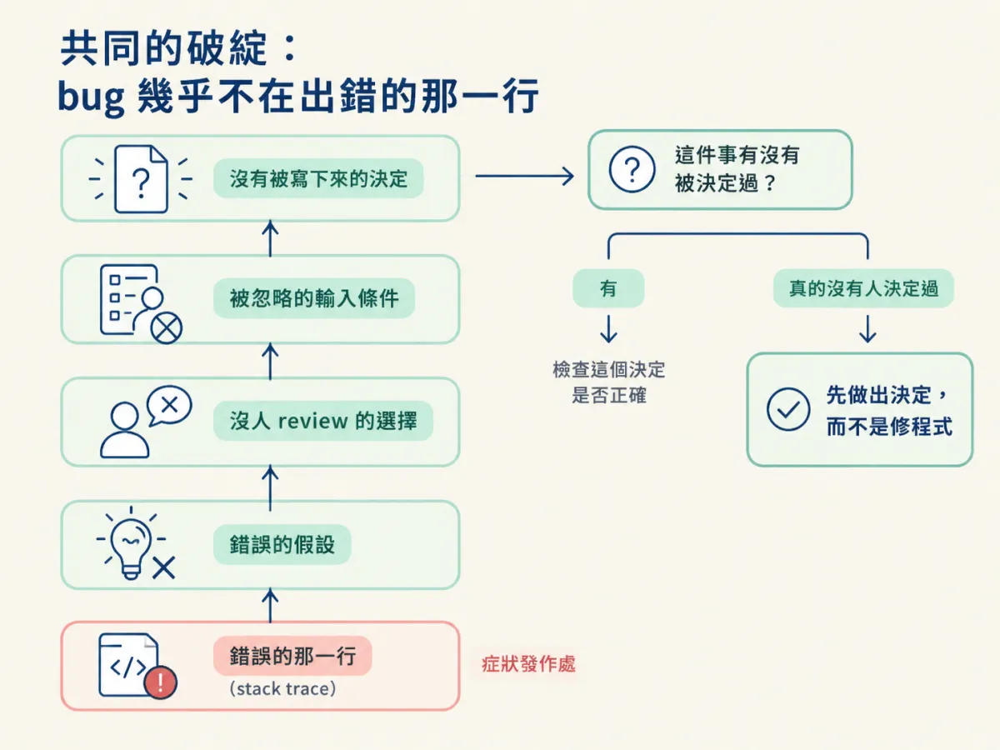

能認出 AI 寫碼時四種反覆出現的失敗模式與各自的破綻，並用「bug 幾乎不在出錯的那一行」把調查往前推。
這頁是查閱用的。當你手上有一段 AI 寫的碼出錯，這張表幫你判斷它屬於哪一種失敗，以及第一個該檢查哪裡。範圍限於本課整理的四種模式，不是所有 AI 失敗的窮盡分類；對不上這四種，不代表沒有問題，只代表你要回到上一節的三個來源慢慢找。
這幾個名字值得記，因為認出來之後，你的第一個動作會完全不同。看到「呼叫不存在的函式」，你去查版本；看到「讀起來很順但結果錯了」，你去餵真實資料。兩者的調查方向幾乎沒有重疊，而搞錯方向，就是你花兩小時卻一無所獲的主因。

| 模式 | 怎麼壞 | 多難抓 | 第一個檢查 |
|---|---|---|---|
| 發明出來的函式 （invented function） |
呼叫一個根本不存在的東西，或兩版之前才存在的東西 | 容易。錯得很大聲 | 把錯誤訊息裡的函式名拿去查目前版本的 API |
| 看似合理但邏輯錯 （plausible but wrong logic） |
讀起來正確、review 會過，遇到真實資料才錯 | 最難。形狀對，推理不對 | 用真實資料跑邊界，而不是只看程式順不順 |
| 檔案中途做的決定 （a decision made mid-file） |
嚴格說不是 bug：某個東西被生成器選了，沒有人 review | 在它跟別的東西衝突之前看不見 | 問「這個選擇是誰決定的、記在哪裡」 |
| 沒被考慮到的邊界 （the unconsidered edge case） |
happy path 完整，第一個不尋常的輸入就從缺口穿過去 | 餵真實資料之後就變容易 | 列出它沒有處理的輸入，特別是空值與異常格式 |
Agent 呼叫了一個不存在的函式，或某個在舊版本才有、現在已經移除的函式。這種錯誤通常在你第一次執行時就爆開，錯誤訊息直接寫出名字，所以你不需要推理，只需要查證。
示範（不是來源裡的程式）：
// 示範：目前的 SDK 只有 verify，沒有 verifyToken
const payload = jwt.verifyToken(token)
這種模式的危險不在難查，在於它太好查，容易讓你以為「AI 寫的碼就是這樣，改個名字就好」。修完這一個，下一個可能不是同一種。
它讀起來是對的，review 也會過，因為它的形狀對：命名合理、分層合理、錯誤處理看起來該有的都有。錯的是裡面的推理，而推理不會寫在表面上。
這也是為什麼 review 抓不到它：review 大部分時候在看形狀。真正能抓到的，是拿真實資料跑一次，尤其是那些你平常不會手動輸入的資料。來源特別提醒這一種值得停下來多想，因為它什麼都不會提醒你，直到真實資料提醒你。

Agent 在寫某個檔案的途中，順手選了一個做法：也許是錯誤要回 400 還是 422，也許是時間要用 UTC 還是本地時區，也許是重試三次還是五次。它沒有問你，也沒有記錄下來。
這不是嚴格意義的 bug，因為它不一定錯。它只是「被選了，而且沒有人看過」。所以在它跟別的東西衝突之前，它完全隱形；一衝突，你就會看到一個很難理解的現象：兩段都合理的程式，湊在一起卻不對。
正常流程從頭到尾都通，於是你會覺得功能做完了。但 agent 只考慮了它看過的情境，第一個不尋常的輸入，例如空陣列、null、超長字串、重複的鍵、時區跨日，就會直接穿過缺口。
這種模式的好消息是：只要你餵真實資料，它通常會自己現形。壞消息是，如果你只跑 happy path 的測試，它會一直躲著。
四種模式看起來差很多，但它們指向同一個通則：出錯的那一行，通常只是症狀發作的地方，不是決定出錯的地方。
The bug is almost never in the line that failed. It's in a decision made earlier that nobody wrote down.
所以你的調查要多帶一個問題，而這個問題你除錯自己的碼時幾乎不會問：「這件事有沒有被決定過？」
這個問題會把你從錯誤訊息那一行，往上游到更早的地方：一個錯誤的假設、一個沒人 review 的選擇、一個被忽略的輸入條件。它也是上一節那個分支的入口。如果答案是真的沒有人決定過，那你需要的不是修程式，是先把決定做出來。

例子一。錯誤訊息是 TypeError: encryptPassword is not a function。屬於發明出來的函式。第一個動作：查目前版本有沒有這個函式、正確的名字是什麼。不用讀完整個檔案。
例子二。沒有錯誤訊息，但使用者說「有時候結帳金額會多一塊」。程式讀起來完全正確。屬於看似合理但邏輯錯，或沒被考慮到的邊界。第一個動作：找出「有時候」的共同條件，用真實的訂單資料跑一次，而不是繼續讀程式。
兩個例子裡，你先分類，再決定第一個檢查。分類錯了不會世界末日，但你會多繞一段路。
四種模式：發明出來的函式（大聲、好查）、看似合理但邏輯錯（最難，形狀對推理錯）、檔案中途做的決定（不是 bug，是沒人 review 的選擇）、沒被考慮到的邊界（happy path 完整，真實資料一餵就破）。共同破綻是：bug 幾乎不在出錯的那一行，而在更早、沒有人寫下來的某個決定。所以調查要多問一句「這件事有沒有被決定過」。
想理解這四種模式為什麼會出現，回到上一步談的作者記憶；想知道實際怎麼一步步還原意圖，看還原意圖。如果四種都不像，而且 agent 開始重複同樣的動作，那可能不是程式碼的問題。下一節換一個對象：agent 本身。